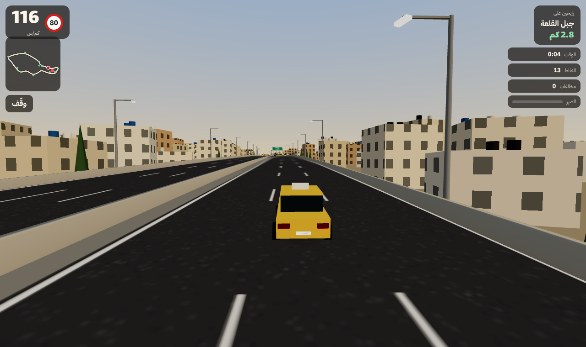
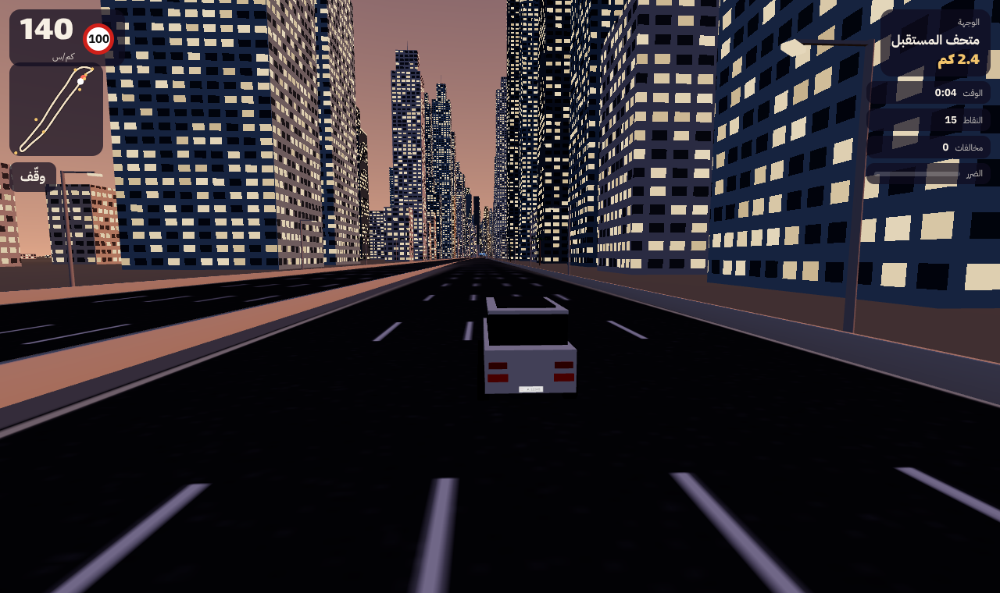

لعبتين سواقة ثلاثية الأبعاد على طرق حقيقية. اختار مدينة، اختار مشوار بين معالمها، وتجاوز السيارات بدون ما تضرب أو يصوّرك الرادار. بتشتغل عالمتصفح، عالكمبيوتر والموبايل.

العبدلي، جبل القلعة، سارية رغدان، المدرج الروماني، جسر عبدون ومكة مول. طلعات ونزلات ومطبات.
العب
برواز دبي، متحف المستقبل، برج خليفة، المارينا وعين دبي، والرجعة على جميرا جنب برج العرب. رادارات وبوابات سالك.
العب↑ بنزين، ↓ بريك، ← → تغيير المسرب، Space زامور. عالموبايل في أزرار عالشاشة.
كل كيلو بنقاط، وكل تجاوز قريب وسريع بنقاط زيادة، وكذا تجاوز ورا بعض بتضاعف.
الرادار، الحوادث، الحك بالحاجز والمطبات بتنقص النقاط وبتخرّب السيارة.
اللعبة بتبدأ بجولة تعليمية قصيرة بتعلّمك كل الأزرار وإنت سايق.